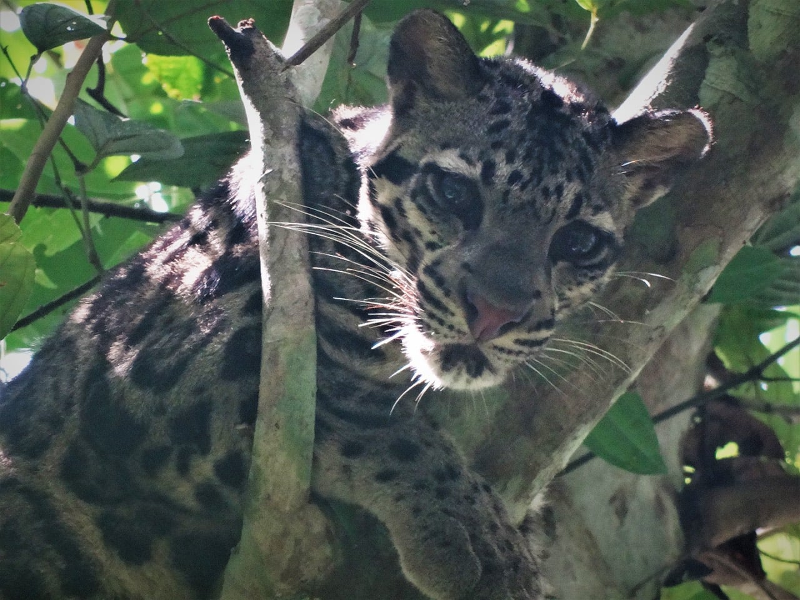

Mammalian Conservation Ecology
Meaghan N. Evans
I'm a wildlife ecologist working on the conservation of mammals, especially carnivores, in landscapes altered by agriculture and development.
Biological Scientist · Fish & Wildlife Research Institute
Florida Fish and Wildlife Conservation Commission
Ph.D., Cardiff University

Lower Kinabatangan, Sabah, Borneo
- Study systems
- Lowland Borneo · Florida
- Focal taxa
- Civets, clouded leopards, otters & small carnivores
- Methods
- GPS telemetry, camera traps, ecotoxicology, physiology
- Pressures
- Habitat loss, agriculture, emerging disease
01 About
Background
I'm a mammalian conservation ecologist interested in how carnivores and other wild mammals use, and cope with, human-modified landscapes. My work combines live-capture, GPS telemetry and camera trapping with physiological and toxicological sampling, so I can relate where animals go to how healthy they are.
I did my Ph.D. at Cardiff University, based for most of each year at Danau Girang Field Centre in the Lower Kinabatangan floodplain of Sabah, Malaysian Borneo. My thesis focused on Malay and common palm civets living among forest fragments and oil palm plantations. I fitted the first GPS satellite collars to a viverrid and combined the tracking data with diet, blood profiles and measurements of heavy metal and agrochemical exposure.
I'm now a Biological Scientist at the Florida Fish and Wildlife Conservation Commission's Fish and Wildlife Research Institute, where I've worked on long-term wildlife population monitoring and wildlife disease investigations, including H5N1 avian influenza.
02 Research
Research areas
My research falls into four related areas, all concerned with how mammals respond to habitat loss, agriculture and disease.
-
Movement & space use in fragmented landscapes
Using GPS telemetry and camera traps to understand how carnivores move through forest fragments, plantations and edges.
-
Wildlife health, physiology & ecotoxicology
Measuring blood profiles and exposure to metals and agrochemicals in wild carnivores living near agriculture.
-
Emerging disease & long-term monitoring
Long-term population monitoring and disease surveillance, including work on H5N1 avian influenza in wildlife.
-
Natural history of understudied mammals
Camera trapping and surveys of little-studied species, including the first activity data for the Sunda stink-badger and a new record of the otter civet.
04 Teaching
Teaching and mentoring
I teach mammalogy and wildlife field techniques with an emphasis on hands-on fieldwork, and I mentor undergraduate and graduate students through their own research projects.
05 Contact
Collaborations and students
I'm always happy to hear from potential collaborators, and from students interested in mammal ecology and conservation.